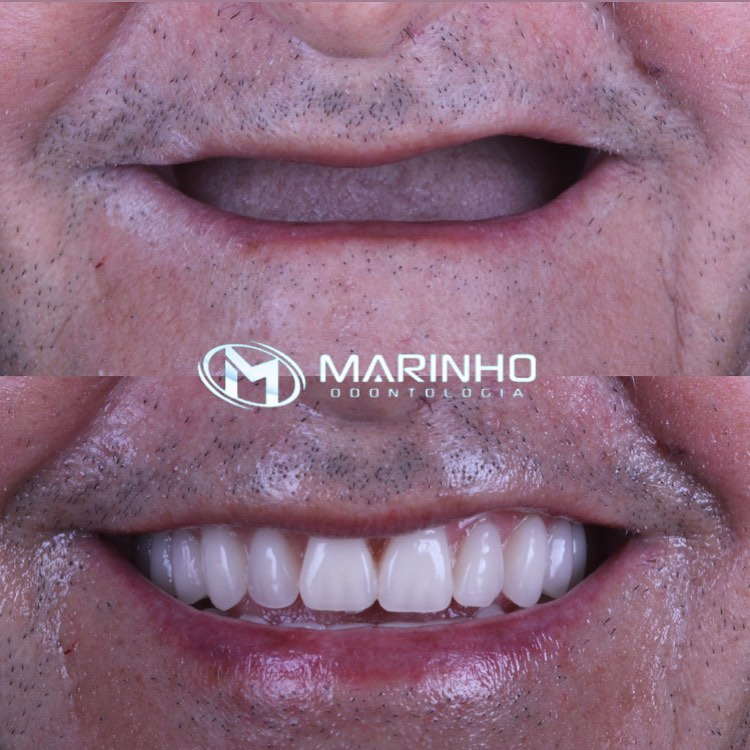
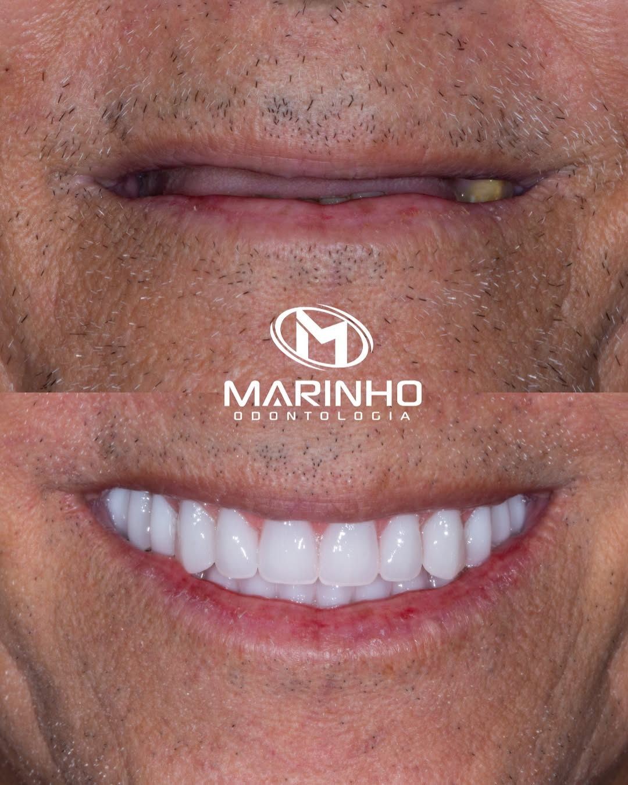
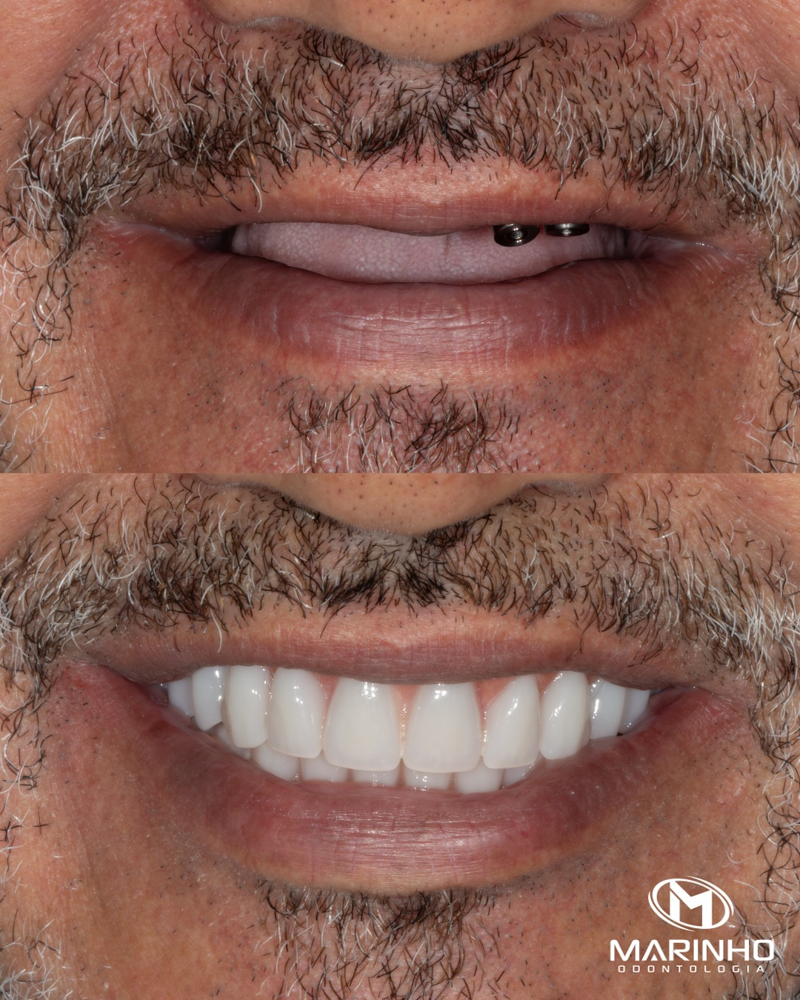
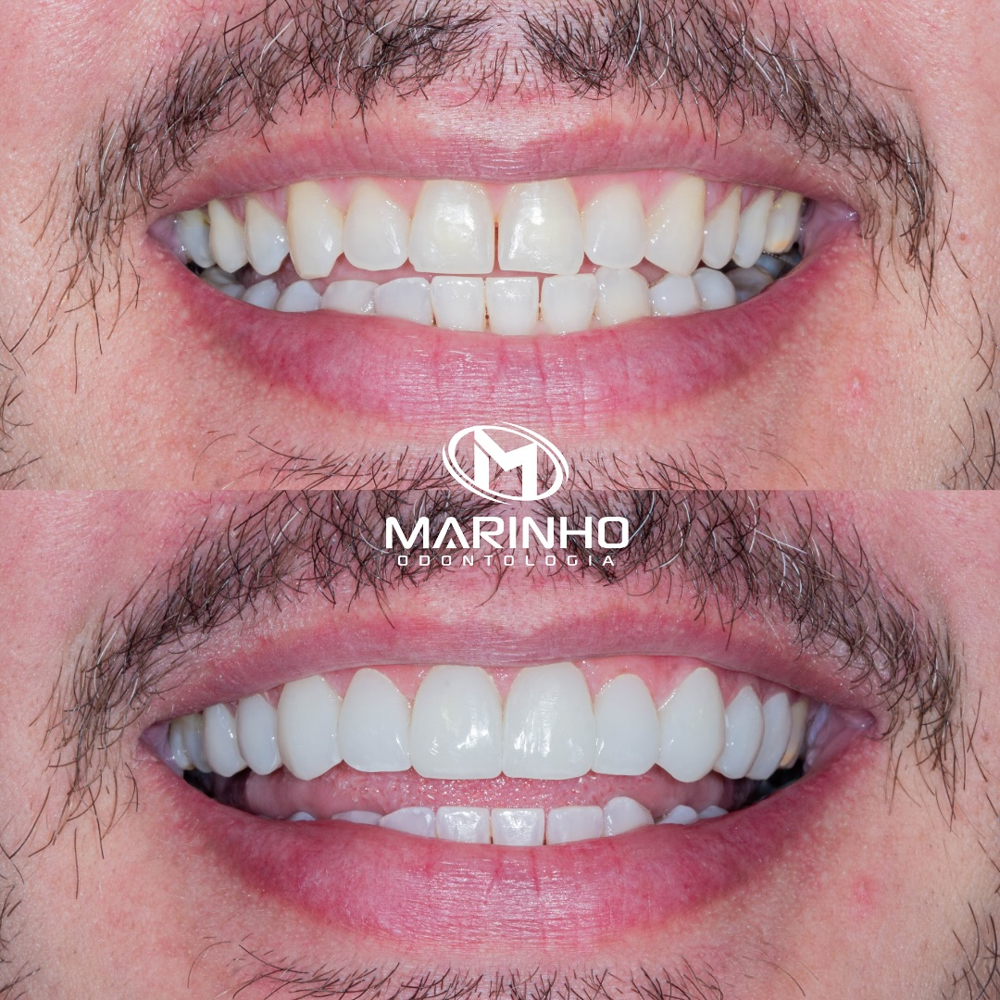
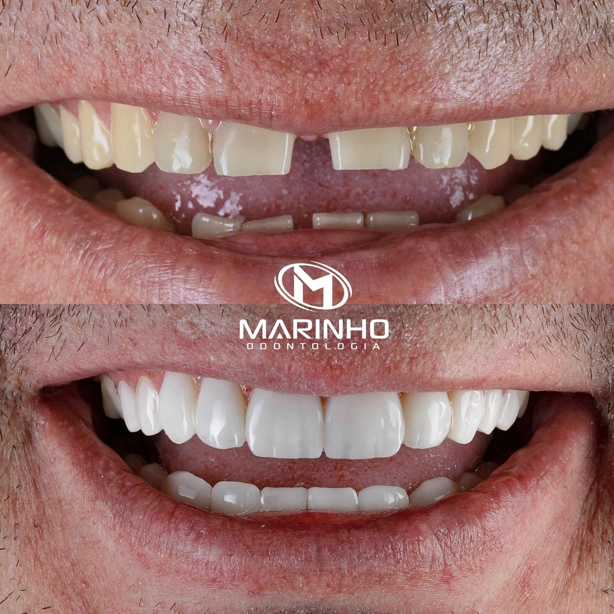
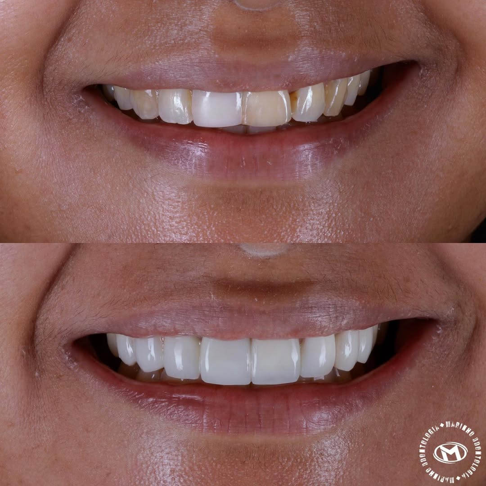
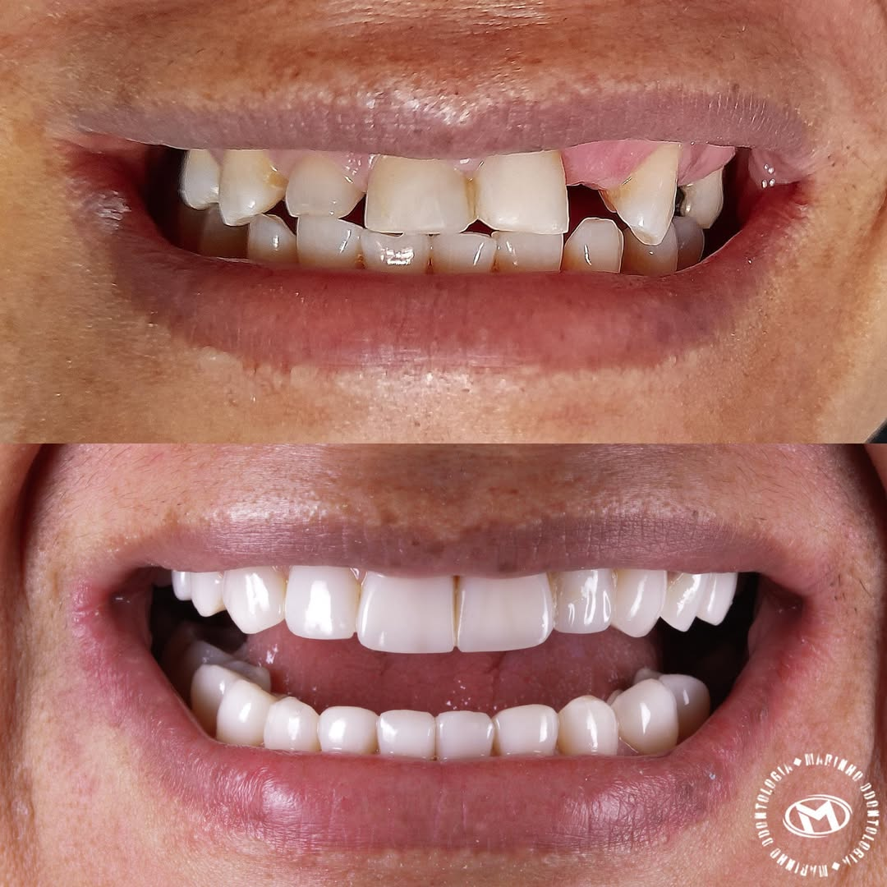
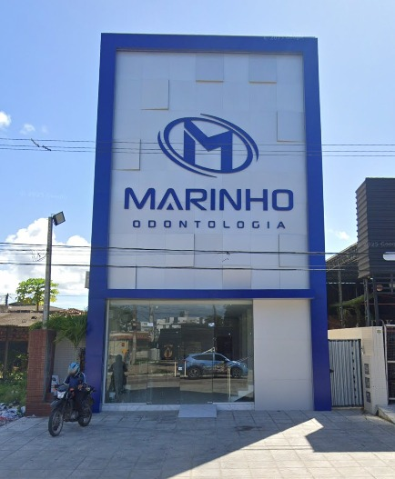

Especialistas em todas as áreas, na unidade Ernesto Geisel. Atendimento de emergência e tecnologia avançada.












Resultados individuais. Imagens com autorização dos pacientes.
A Marinho Odontologia é uma rede de clínicas odontológicas com mais de 10 anos de mercado, 12 unidades e mais de 50 mil pacientes atendidos. Em João Pessoa, a unidade Ernesto Geisel oferece atendimento completo nas principais especialidades odontológicas: implante, ortodontia, estética dental, canal, odontopediatria, periodontia e cirurgia oral.
Contamos com especialistas dedicados em cada área, tecnologia avançada de escaneamento 3D e raio-x digital, e atendimento de emergência para casos urgentes. Toda avaliação inicial é gratuita, com plano de tratamento personalizado e o orçamento exato sem compromisso.
Para tornar o cuidado com a saúde bucal ainda mais acessível, oferecemos parcelamento em até 18x sem juros no cartão e 15x no boleto sem consulta ao SPC. Agende sua avaliação pelo WhatsApp e venha conhecer o dentista de confiança da sua família.

Agende sua avaliação gratuita pelo WhatsApp e descubra como podemos cuidar do seu sorriso.